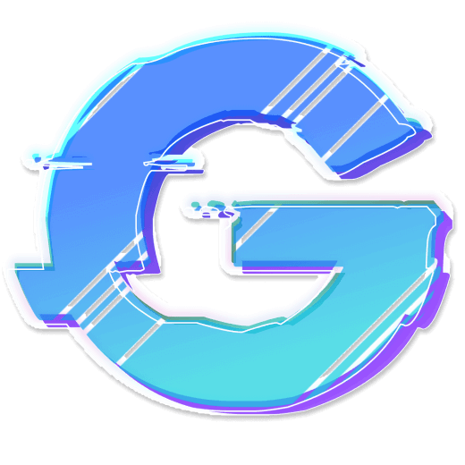
Je ne travail pas,
Je crée.
Développeur passionné depuis de nombreuses années, je fais principalement du web et j'aime mettre l'accent sur les détails.
Mon travail
Chacune de ces réalisations m'a permis de m'entrainer, d'acquérir du savoir et de l'expérience.
-
Farming game
Création d'un jeu de farming en python avec
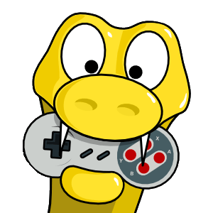
PyGame en NSI. Voir plusL'objectif :
Ce projet a été réalisé en cours de NSI (Numérique et science informatique), Il fallait créer un petit jeu vidéo en python avec la librairie PyGame pour appliquer les principes de la Programmation Orientée Objet.
Le projet :
C'est un petit jeu d'agriculture très simple dans lequel il faut semer des graines dans son champ et puis faire des récoltes. Ces récoltes permettent de récupérer d'autres graines à semer à nouveau.
Le jeu utilise de l'aléatoire pour déterminer le nombre de graines récupérées à chaque récolte.
Le but du jeu est de toujours avoir des graines à planter.
J'ai aussi pu ajouter une mécanique d'arrosage.
Le jeu avait pour ambition d'être plus développé avec un système de monnaie et de marché pour vendre/acheter les plantes et les graines avec des prix changeant. Plus de plantes, des intempéries, des parasites, une gestion de l'eau plus contraignante, des objectifs, une map plus riche, etc.
Fonctionnalités :
- Système de gestion de maps rectangle avec des matrices :
La map du jeu est implémenté avec des listes de liste, - Prise en charge du scaling relatif des cases :
Les cases ont une taille relative à celle de la fenêtre et à la résolution de rendu, - Système de débogage visuel,
- Implémentation d'une interface avec des icons,
- Gestion des déplacements au clavier,
- Gestion du temps relatif au frame rate,
- Implémentation d'un parser de spritesheet :
Création d'un outil d'extraction de sprites à partir d'une spritesheet avec prise en charge du recadrage et de mise à l'échelle, - Implémentation d'un inventaire,
Défis majeurs et apprentissages :
Ce projet m'a permis de me plonger plus profondément dans l'architecture technique des jeux vidéo, notamment la structure de la "boucle de jeu" (game loop).
Il m'a aussi permis d'implémenter moi-même les systèmes classiques de jeux vidéos comme la map ou le gestionnaire d'assets graphiques (spritesheet parser), Ces éléments étaient surtout gérés par Unity dans mes précédents jeux.- Elaboration d'un projet sur 2 semaines, gestion du temps et des priorités,
- Recherche d'assets avec des licences adaptées,
- Réflexions sur l'organisation de l'architecture du code et mise en œuvres des règles de la Programmation Orientée Objet,
- Gestion des problématiques de versions de Python et modes de compatibilité,
- Première introduction de PyGame ,
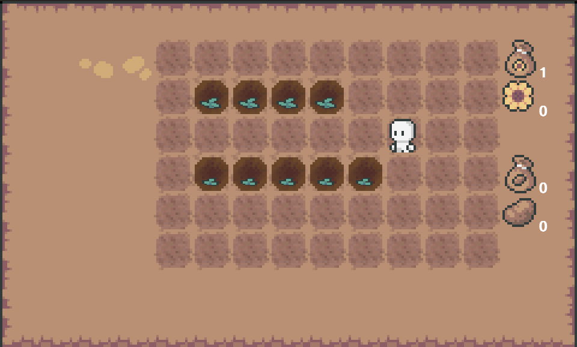
- Système de gestion de maps rectangle avec des matrices :
-
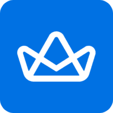
Royal media
Création de A à Z d'un site web pour un nouveau média spécialisé dans la finance et les cryptomonnaies. Voir plus
L'objectif était de créer un site web d'informations, le site devait contenir (notamment),
- Un système d'articles avec des tags et des catégories,
- Des "flash news" en temps réel,
- Un système de compte et de connexion,
- Un panel de gestion pour une future équipe de rédaction
J'ai été le principal développeur sur ce projet, avec la précieuse aide de @Mathieu.
Mes missions :
- Retravailler et intégrer la maquette
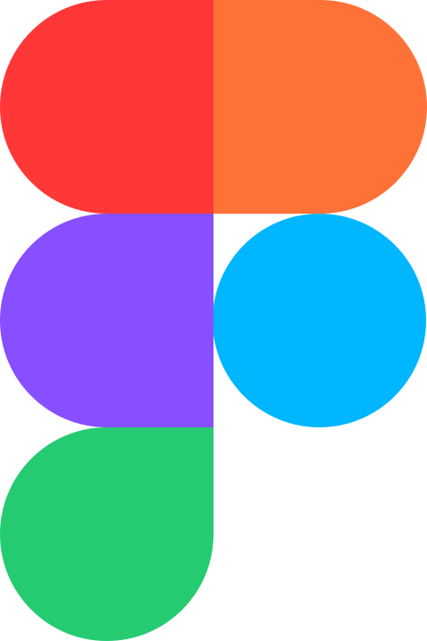
Figma à l'aide du designer @Mathieu. - Choisir les technologies et mettre en place le projet.
- Intégrer le frontend.
- Intégrer le backend, notamment une API REST.
- Optimiser le chargement, notamment avec l'implémentation du SSR, de chargements asynchrones et de squelettes placeholders.
- Mettre en place un système de comptes utilisateurs avec des permissions et un système de connexions externes (Discord, Google, TikTok).
- Concevoir et développer une console de gestion pour les administrateurs et une future équipe de rédaction.
Défis majeurs et apprentissages :
- C'est grâce à ce projet que j'ai pu découvrir les frameworks modernes (notamment
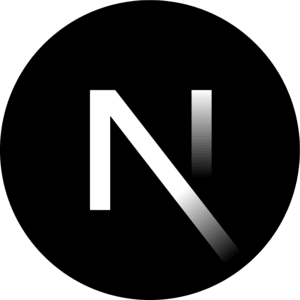
Next.js ), le SSR, et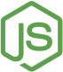
NodeJs . - J'ai dû également me renseigner sur la gestion des Cookies, des outils d'analyses de trafics, et du RGPD.
- L'optimisation du site a été un processus particulièrement complexe pour moi, il a fallu réfléchir à la solution la plus appropriée pour chaque partie du site.
- C'est aussi avec ce projet que j'ai mis pour la première fois les mains dans le backend, découverte de la gestion de bases de données, des connexions et la structure REST.
La stack :
- Bundler : Next.js
- Backend : NodeJs , MariaDB
- Frontend :
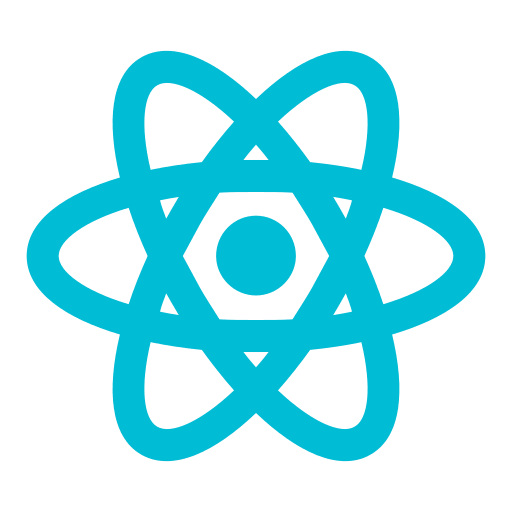
React ,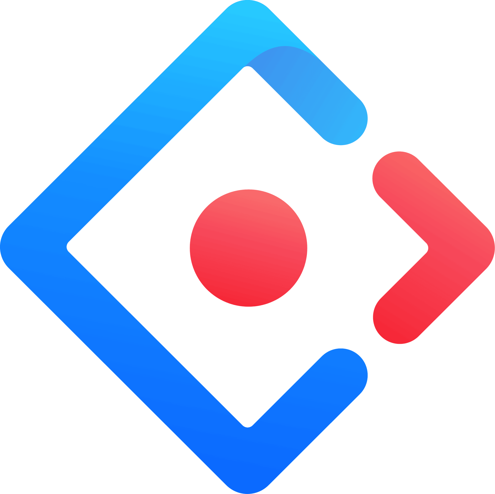
Ant design - Autre :
 Github
,
Figma
,
Google Analytics
Github
,
Figma
,
Google Analytics
Le projet a finalement été arrêté, mais il constitue mon projet le plus abouti pour l'époque.
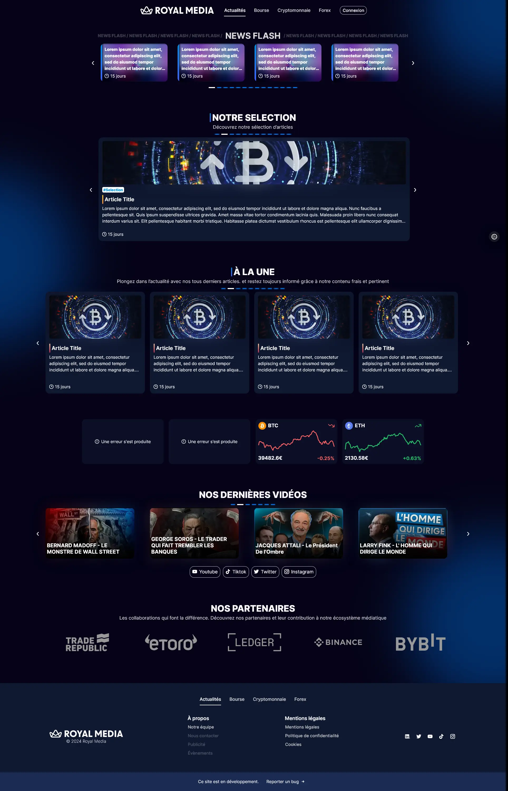
-
Todo App
Mini application de tâches. Voir plus
J'ai créé seul cette web-application dans le cadre d'un cours de SNT.
Fonctionnalités :
- Créer des tâches,
- Définir une description,
- Définir une date d'échéance,
- Marquer les tâches terminées,
- Supprimer les tâches
Apprentissages :
J'ai créé le moteur de rendu en me basant sur le fonctionnement de React , une fonction
render()vérifie les tâches à créer, à modifier et à supprimer de sorte qu'un minimum d'opérations soit effectué sur le DOM et pour éviter tout rendu inutile.Le design et la réalisation de cette application ont été réalisés en 10 heures à raison d'une séance d'une heure par semaine.
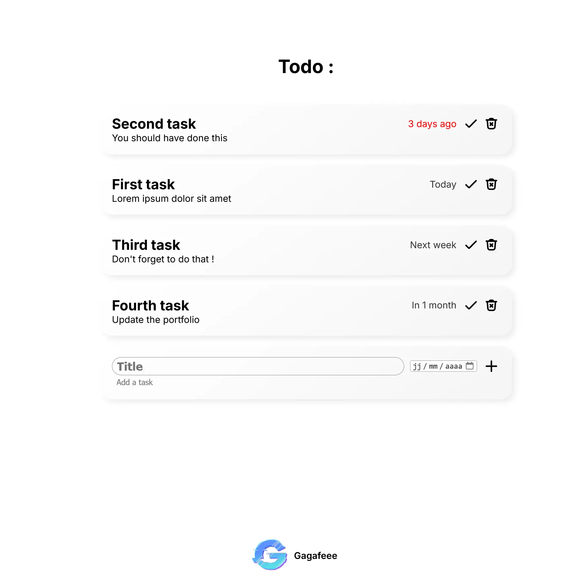
-
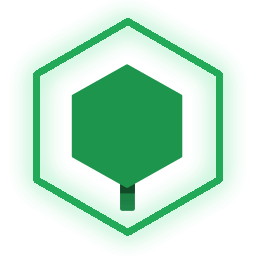
Bush Launcher
Ce projet de lanceur Minecraft avait pour but de grandement simplifier la gestion des mods et des extensions du jeu. Voir plus
Le BushLauncher était un logiciel de lancement (launcher) du jeu Minecraft, qui permettait notamment de lancer le jeu et de gérer ses différentes versions, d'installer des mods, des plugins, des datapacks etc.
Il possédait de nombreuses fonctionnalités de gestion automatique des fichiers permettant de faciliter la mise en place de configurations de jeu pour le singleplayer et le multiplayer privé et public.Fonctionnalités :
- Gestion de l'installation du jeu et de ses différentes versions,
- Gestion des prérequis et de Java,
- Système de connexion Microsoft et authentification des joueurs,
- Système de configurations personnalisables,
- Prise en charge de tous les types d'addons (Mods, Plugin, Datapack, Shaderpack, etc) et de tous les loaders,
- Système d'export et de partage des configurations,
- Système de séquences de lancements configurables,
- Mode hors-ligne
J'ai été le seul développeur de ce projet, mais je me suis grandement aidé de ces librairies.
Mes missions ont donc été de créer, de concevoir, et d'implémenter l'interface et tous les systèmes de l'application.
Défis majeurs et apprentissages :
- Découverte d'
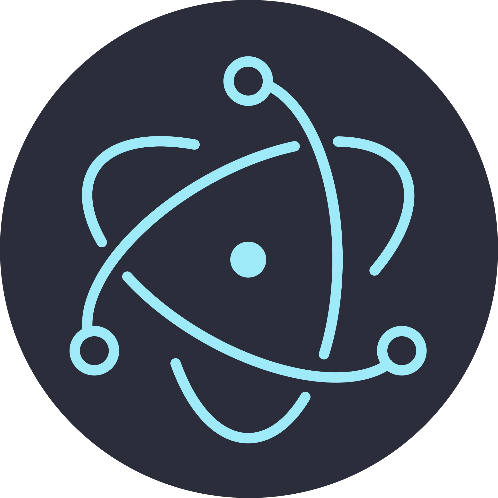
Electron , de React et d' Ant design . - Un des défis majeurs de ce projet a été le développement du système de téléchargement, il a fallu gérer les sources, la synchronisation des paquets de données, la validation des données, les mises à jour des addons, etc. J'ai beaucoup appris sur l'asynchrone, les fonctions internes et la gestion automatique de fichiers.
- Un autre défi a été la conception du moteur de lancement, en effet, il est
dessiné
comme une liste de tâches à effectuer pour lancer le jeu ("télécharge ceci", puis
"exécute cela"...), ces tâches varient en fonction de la "configuration" choisie.
Il a fallu gérer les permissions, l'ordre d'exécution, la gestion des erreurs, etc. - C'est également ma découverte de Typescript et la mise en place de mes premières normes de développement.
La stack :
- Bundler : Electron
- Backend : Electron , @XMCL , Axios
- Frontend : React , Ant design
- Autre :
Github
,
Figma
,
MSMC
- Projet basé sur le Electron React Boilerplate.
Finalement, ce projet n'a jamais été téléchargé par quiconque et est resté en beta... Si vous étiez prêt à télécharger une telle application, je vous redirige vers un projet équivalent Modrinth.
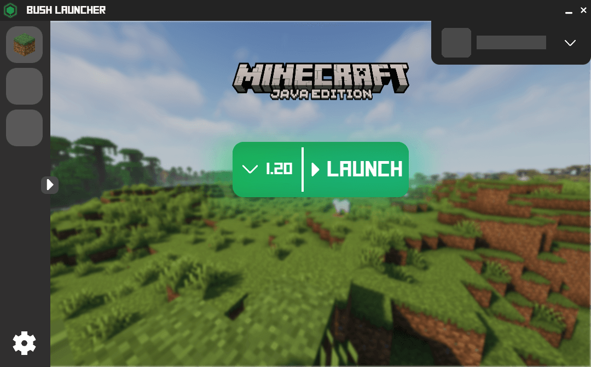
-
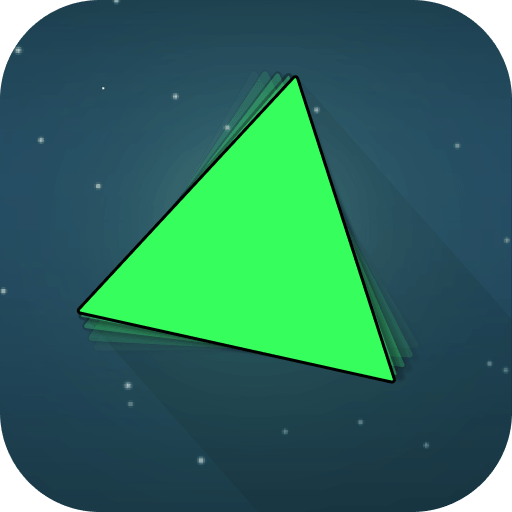
Tryangle
Création d'un platformer 2d pour Android. Voir plus
Design et implémentation d'un jeu vidéo de type platformer pour Android avec une physique particulière basée sur les rebonds d’un triangle et des contrôles par impulsions avec Unity .
Fonctionnalités :
- Système de mouvements par impulsions,
- 60 niveaux,
- Différents types d'obstacles,
- Téléporteurs,
- Plateforme mouvantes,
- Système de skins avec des capacités spéciales,
- Sélecteur de langue français / anglais,
- Gestion de nombreux effets sonores dans les menus,
- Affichage relatif des niveaux en fonction du temps de completion,
- Scène de crédits
Ce projet personnel m'a permis de manipuler Unity et l'écosystème android pour la première fois. Cela m'a aussi permis de suivre la production complete d'un jeu de l'idée originale jusqu'à la publication et aux mises à jour de maintenance et de sécurité.
Défis majeurs et apprentissages :
- Formalisation d'une simple idée en un projet concret.
- Recherche et création d'un style graphique.
- Trouver des assets (notamment des musiques, bruitages, et polices de textes) avec les licences appropriées pour la publication.
- Prendre en compte les retours des utilisateurs et ajuster le projet tout en conservant l'esprit original.
- Gérer la publication sur un Playstore. Notamment la création d'une identité numérique pour la publication.
- Rédaction et mise en ligne d'une politique de confidentialité associée.
La stack :
- Langage : CSharp
- Projet basé sur : Unity
- Autre : GIMP, Google Playstore, Docs
Le projet n'est actuellement plus disponible sur le Playstore ^^'
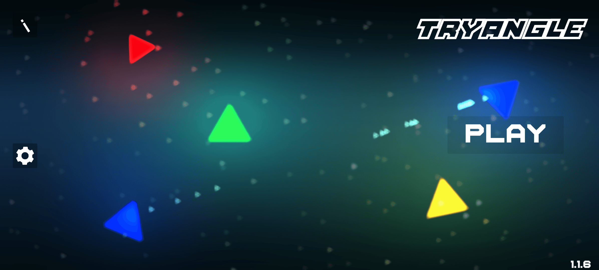
-
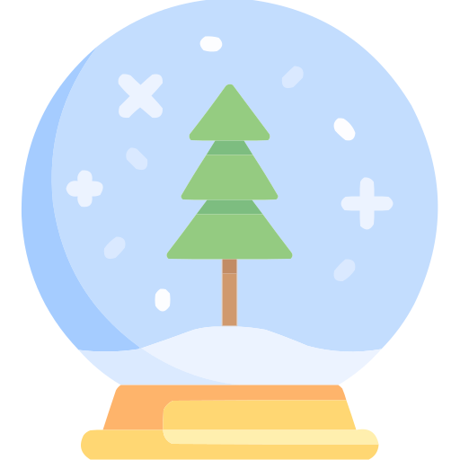
Calendrier de l'avent écologique
Conception et implémentation d'un calendrier de l'avent écologique intéractif pour mon collège. Voir plus
Pour la deuxième édition de l'initiative du calendrier de l'avent écologique dans mon collège, j'ai voulu m'impliquer davantage en prenant la responsabilité du développement.
L'objectif :
Réaliser un support web interactif original sous forme de calendrier de l'avent pour présenter chaque jour, une série d'idées écologiques proposées par le club du collège.
Le projet :
Pour ce projet, j'ai eu l'idée de partir sur un sapin de noël pour éviter le pattern de la "boite avec des cases" (que j'avais déjà pu implémenter lors de la première édition).
J'ai vite pu explorer les différentes possibilités de personnalisation qu'offre un sapin de noël (qui peut être décoré contrairement à un calendrier).
J'ai ensuite eu l'idée de transformer certaines boules en cadeaux et la 24ᵉ boule en étoile au sommet du sapin !Fonctionnalités :
- Affichage d'un sapin qui se décore de jours en jours en sapin de noël,
- Chaque jour, une nouvelle boule apparait sur le sapin,
- Les élements du sapin sont cliquables et ouvrent une page avec un article,
- Le sapin est personnalisable et chaque utilisateur peut le décorer comme il le souhaite avec les boules existantes,
- La configuration est sauvegardée sur l'appareil avec des cookies.
Défis majeurs et apprentissages :
- Implémentation de
touch/mouse eventset dedrag events. - Création d'un panel d'article réutilisable.
- Première implémentation d'une interface responsive.
- Premier déploiement d'un site avec un nom de domaine dédié.
- Implémentation d'un système analytics, gestion des cookies et de la bannière de consentement.
- Optimisation d'images notamment vectorisation
La stack :
- Frontend : HTML , CSS , JS
- Déploiement :
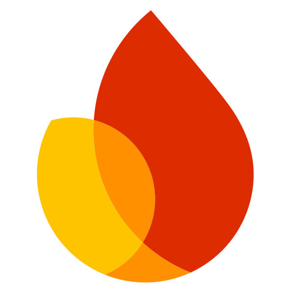
Firebase - Autre : Google Analytics
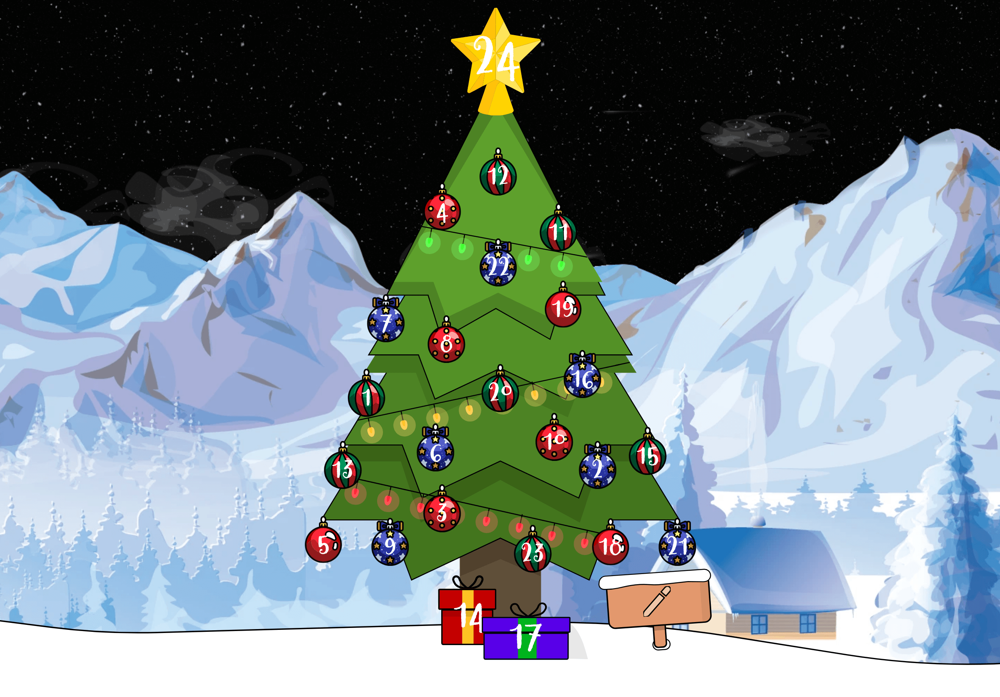
Me contacter
Paris, France